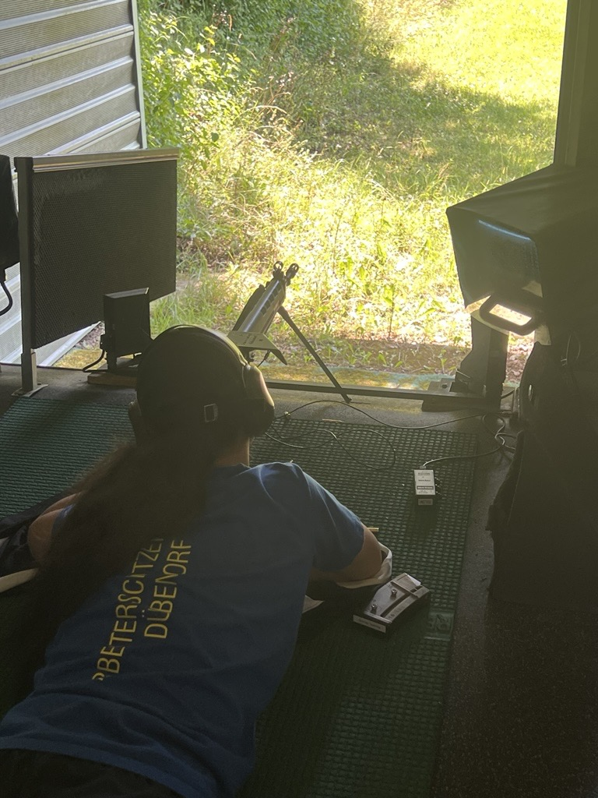

Trainingsroutine
Optimierung der täglichen Abläufe im Sportschießen

Projektbeschreibung
Dieses Projekt beschäftigt sich mit der Verbesserung meiner täglichen Trainingsroutine im Sportschießen. Ziel ist es, Abläufe zu standardisieren, Fehler zu reduzieren und die mentale Konzentration zu steigern.
Ziele
- Konstante Technik entwickeln
- Fehleranalyse nach jedem Training
- Mentale Stabilität verbessern
Ergebnis
Durch strukturierte Abläufe konnte ich meine Leistung stabilisieren und meine Trefferquote verbessern.
← Zurück zu Projekten